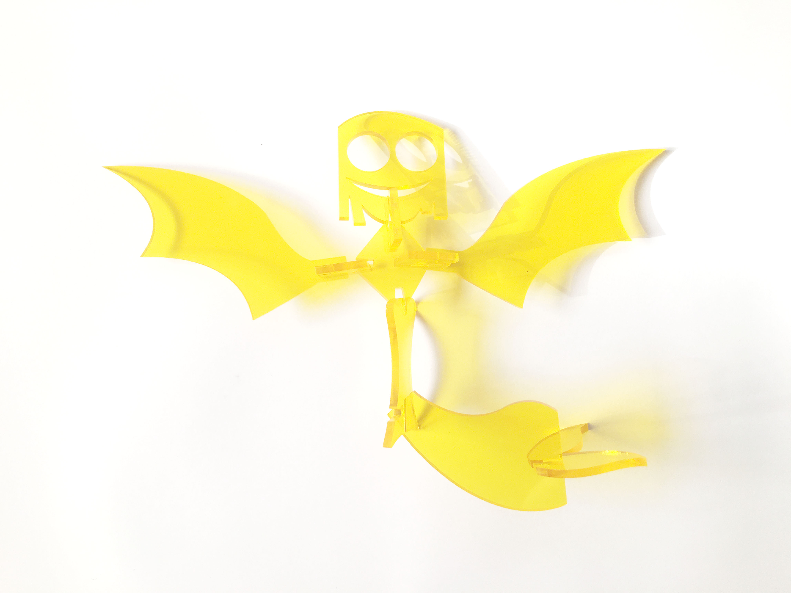
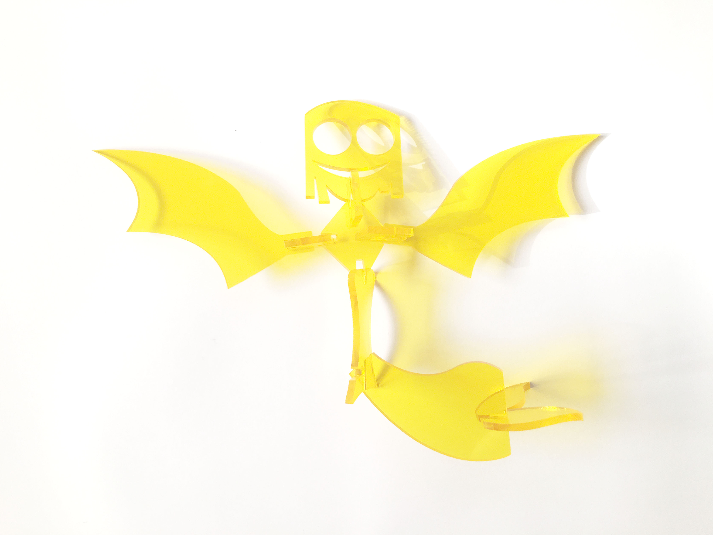

Tesselation
Phase 1
This is my phase 1 for the group project. The approach I made was to take straight lines and curly lines then combine the two together at the edge with a triangle. This was sort of a random experiment join together to have the line meet in order to get the shape that I need, however, the orignal idea was to make sure we all agreed upon the triagle shape so we make duplicates of it. Basically we all traced one side of a positive and the other is negative to make sure all the pieces align toward the end. The two images above are my cuts.
Tesselation
Phase 2
During phase 2, I choose the hook attach method and went with the card suite. The first time around there wasn't much flexibility and all the suit sort of look the same with just the hook added on toward the end. After some feedback I went back and added more variation to the shape and expand further beyond playing it safe with the card suites. First image is the first stage. Second image is after getting the feedback and I went back to fix. This was a hook method on paper cutout.

Tesselation
Phase 3
In phase 3 (I feel like this is an MCU rip-off) anyway, we designed our own mythical creature after having some feedback with our project. We made a set of cards to go with them like Yugioh. Once you drew a card you would allow to create your very own unique hideous creature by mix and matching. We made mermaid, dragon, minotaur, anubis, and unicorn. Some of the pieces came out very nice like the minotaur had a perfect notch cutout. Also the dragon as well. The other one's like mermaid and anubis was on life support. The unicorn was a fine medium of in between of notches cutout. My piece was the anubis set which had problems with the fasterners. The measurements came out incorect and then the lasers slice it twice which wasn't very nice after adding insult in incorrect measurements. I helped with making sure everyone pieces were all cutout and we had a total of all pieces. I helped with the video and tech support during the crunch time right before presentation. Anthony bought the acrylic and helped everyone with illustrator. Bernice created the mermaid design and she book the slot for our laser cut and helped removed the tape in the acrylic. Ianne made the dragon set and she also helped with booking the laser room. Austin created the schema and worked on the card of the creatures. Jabai out.
 
